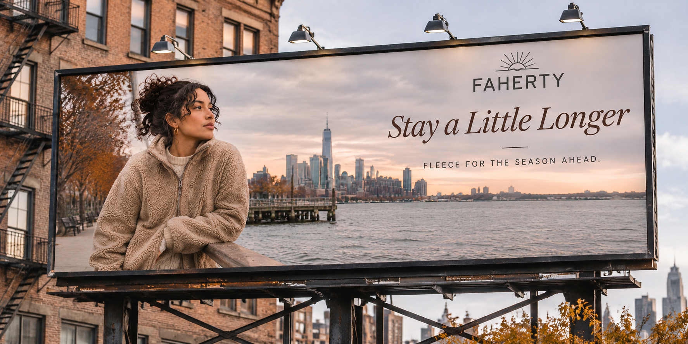
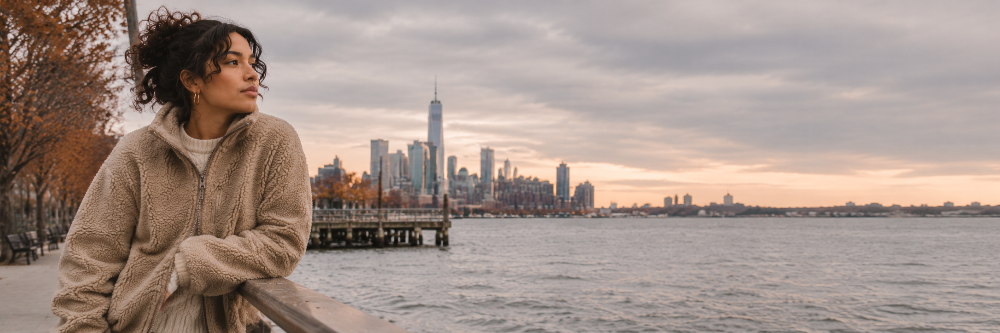
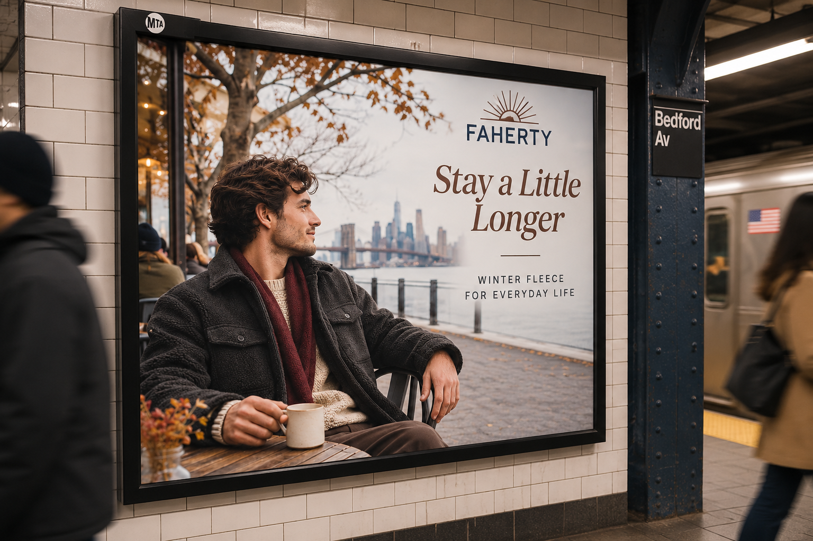
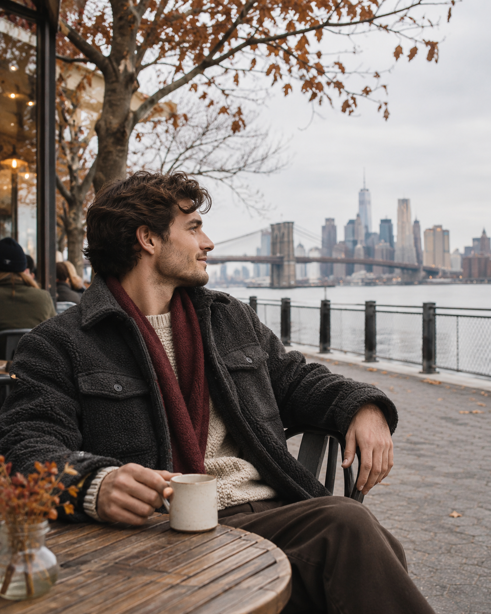
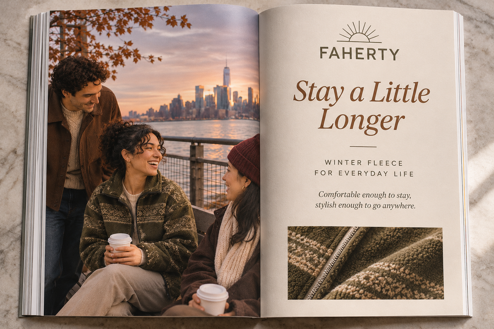
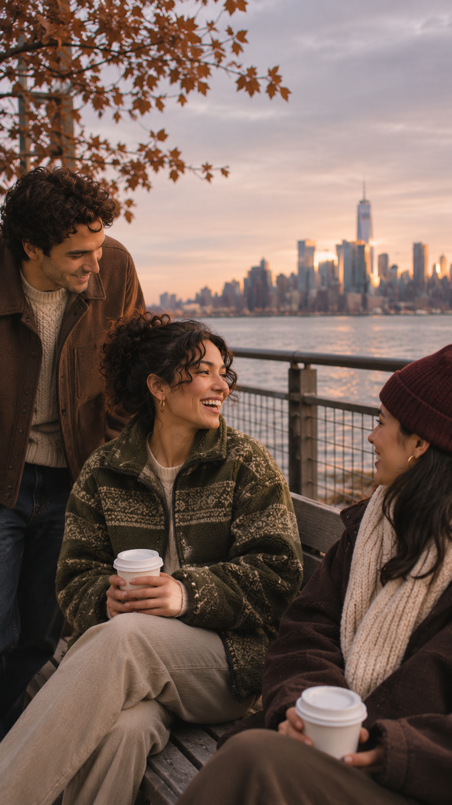
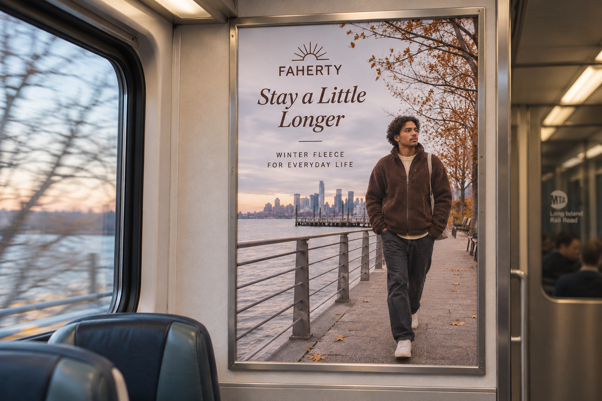
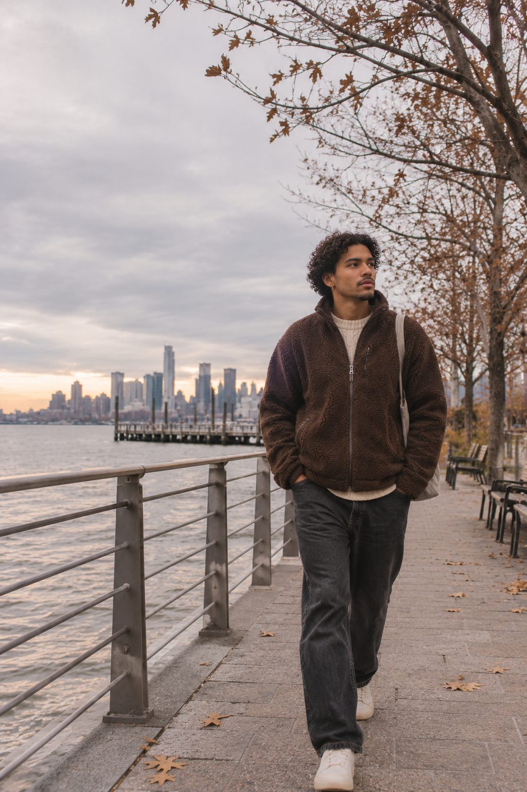
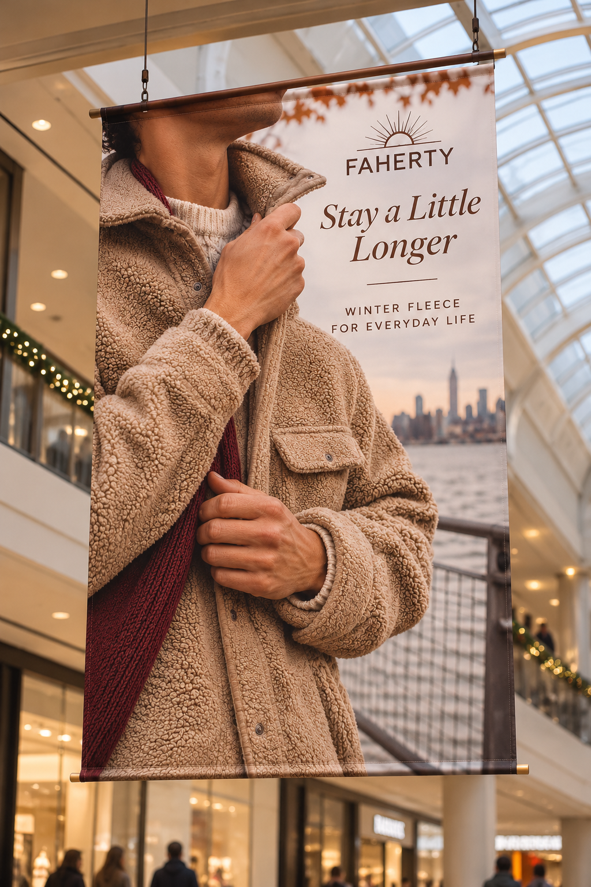
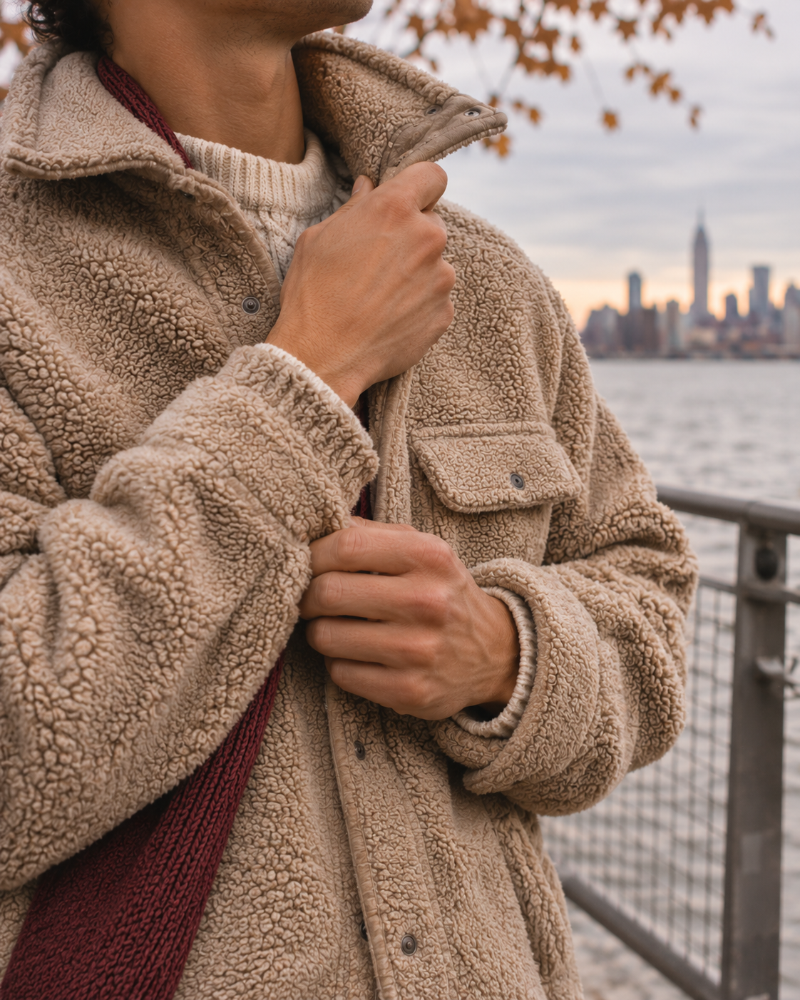

01
A moment above the city.
Outdoor / Billboard




02
A pause in the commute.
Transit / Subway poster




03
Good company. Warm layers.
Print / Magazine spread




04
Made for the way home.
Transit / Long Island Rail Road




05
The comfort is in the details.
Retail / Hanging banner



